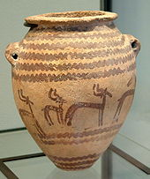
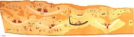
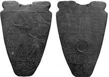
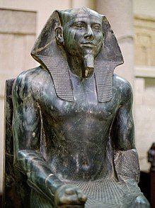

The Nile has been the lifeline of its region for much of human history.[9] The fertile floodplain of the Nile gave humans the opportunity to develop a settled agricultural economy and a more sophisticated, centralized society that became a cornerstone in the history of human civilization.[10] Nomadic modern human hunter-gatherers began living in the Nile valley through the end of the Middle Pleistocene some 120,000 years ago. By the late Paleolithic period, the arid climate of Northern Africa became increasingly hot and dry, forcing the populations of the area to concentrate along the river region.

In Predynastic and Early Dynastic times, the Egyptian climate was much less arid than it is today. Large regions of Egypt were covered in treed savanna and traversed by herds of grazing ungulates. Foliage and fauna were far more prolific in all environs and the Nile region supported large populations of waterfowl. Hunting would have been common for Egyptians, and this is also the period when many animals were first domesticated.[11]
By about 5500 BC, small tribes living in the Nile valley had developed into a series of cultures demonstrating firm control of agriculture and animal husbandry, and identifiable by their pottery and personal items, such as combs, bracelets, and beads. The largest of these early cultures in upper (Southern) Egypt was the Badari, which probably originated in the Western Desert; it was known for its high quality ceramics, stone tools, and its use of copper.[12]
Early tomb painting from Nekhen, c. 3500 B.C., Naqada, possibly Gerzeh, culture
The Badari was followed by the Amratian (Naqada I) and Gerzeh (Naqada II) cultures,[13] which brought a number of technological improvements. As early as the Naqada I Period, predynastic Egyptians imported obsidian from Ethiopia, used to shape blades and other objects from flakes.[14] In Naqada II times, early evidence exists of contact with the Near East, particularly Canaan and the Byblos coast.[15] Over a period of about 1,000 years, the Naqada culture developed from a few small farming communities into a powerful civilization whose leaders were in complete control of the people and resources of the Nile valley.[16] Establishing a power center at Nekhen (in Greek, Hierakonpolis), and later at Abydos, Naqada III leaders expanded their control of Egypt northwards along the Nile.[17] They also traded with Nubia to the south, the oases of the western desert to the west, and the cultures of the eastern Mediterranean and Near East to the east.[17]
The Naqada culture manufactured a diverse selection of material goods, reflective of the increasing power and wealth of the elite, as well as societal personal-use items, which included combs, small statuary, painted pottery, high quality decorative stone vases, cosmetic palettes, and jewelry made of gold, lapis, and ivory. They also developed a ceramic glaze known as faience, which was used well into the Roman Period to decorate cups, amulets, and figurines.[18] During the last predynastic phase, the Naqada culture began using written symbols that eventually were developed into a full system of hieroglyphs for writing the ancient Egyptian language.
 The Early Dynastic Period was approximately contemporary to the early Sumerian-Akkadian civilisation of Mesopotamia and of ancient Elam. The third-century BC Egyptian priest Manetho grouped the long line of pharaohs from Menes to his own time into 30 dynasties, a system still used today. He began his official history with the king named "Meni" (or Menes in Greek) who was believed to have united the two kingdoms of Upper and Lower Egypt.[20] The transition to a unified state happened more gradually than ancient Egyptian writers represented, and there is no contemporary record of Menes. Some scholars now believe, however, that the mythical Menes may have been the king Narmer, who is depicted wearing royal regalia on the ceremonial Narmer Palette, in a symbolic act of unification.[21] In the Early Dynastic Period, which began about 3000 BC, the first of the Dynastic pharaohs solidified control over lower Egypt by establishing a capital at Memphis, from which he could control the labour force and agriculture of the fertile delta region, as well as the lucrative and critical trade routes to the Levant. The increasing power and wealth of the kings during the early dynastic period was reflected in their elaborate mastaba tombs and mortuary cult structures at Abydos, which were used to celebrate the deified king after his death.[22] The strong institution of kingship developed by the kings served to legitimize state control over the land, labour, and resources that were essential to the survival and growth of ancient Egyptian civilization.
 Major advances in architecture, art, and technology were made during the Old Kingdom, fueled by the increased agricultural productivity and resulting population, made possible by a well-developed central administration.[25] Some of ancient Egypt's crowning achievements, the Giza pyramids and Great Sphinx, were constructed during the Old Kingdom. Under the direction of the vizier, state officials collected taxes, coordinated irrigation projects to improve crop yield, drafted peasants to work on construction projects, and established a justice system to maintain peace and order.[26] With the rising importance of central administration in Egypt a new class of educated scribes and officials arose who were granted estates by the king in payment for their services. Kings also made land grants to their mortuary cults and local temples, to ensure that these institutions had the resources to worship the king after his death. Scholars believe that five centuries of these practices slowly eroded the economic vitality of Egypt, and that the economy could no longer afford to support a large centralized administration.[27] As the power of the kings diminished, regional governors called nomarchs began to challenge the supremacy of the office of king. This, coupled with severe droughts between 2200 and 2150 BC,[28] is believed to have caused the country to enter the 140-year period of famine and strife known as the First Intermediate Period.
 After Egypt's central government collapsed at the end of the Old Kingdom, the administration could no longer support or stabilize the country's economy. Regional governors could not rely on the king for help in times of crisis, and the ensuing food shortages and political disputes escalated into famines and small-scale civil wars. Yet despite difficult problems, local leaders, owing no tribute to the pharaoh, used their new-found independence to establish a thriving culture in the provinces. Once in control of their own resources, the provinces became economically richer—which was demonstrated by larger and better burials among all social classes.[30] In bursts of creativity, provincial artisans adopted and adapted cultural motifs formerly restricted to the royalty of the Old Kingdom, and scribes developed literary styles that expressed the optimism and originality of the period.[31] Free from their loyalties to the king, local rulers began competing with each other for territorial control and political power. By 2160 BC, rulers in Herakleopolis controlled Lower Egypt in the north, while a rival clan based in Thebes, the Intef family, took control of Upper Egypt in the south. As the Intefs grew in power and expanded their control northward, a clash between the two rival dynasties became inevitable. Around 2055 BC the northern Theban forces under Nebhepetre Mentuhotep II finally defeated the Herakleopolitan rulers, reuniting the Two Lands. They inaugurated a period of economic and cultural renaissance known as the Middle Kingdom